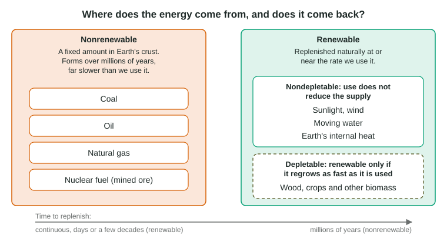

Renewable and Nonrenewable Resources
Energy resources are sorted by how fast nature replaces them.
Part 1 · Hook
Why this matters
Part 2 · Prerequisite check
Quick check before you start
1. Where does the energy stored in coal and wood originally come from?
- Sunlight captured by plants through photosynthesis
- Heat from Earth's core
- The wind
- Ocean tides
Show the answer
Plants capture sunlight in photosynthesis and store it as chemical energy; coal is the remains of ancient plants.
- Correct: Sunlight captured by plants through photosynthesis:
- Heat from Earth's core:
- The wind:
- Ocean tides:
2. What does the tragedy of the commons describe?
- A shared resource overused because each user gains by taking more
- A resource that cannot be used up
- A private resource protected by its owner
- A resource that replaces itself instantly
Show the answer
When no one owns a shared resource, each user has a reason to take more, and the resource is depleted.
- Correct: A shared resource overused because each user gains by taking more:
- A resource that cannot be used up:
- A private resource protected by its owner:
- A resource that replaces itself instantly:
Part 3 · See it
See it first

Part 4 · Step by step
How it works, step by step
- A resource forms over millions of years, like coal, oil or natural gasevery unit burned today is gone for any human timescale, so the supply is fixed and nonrenewable
- A resource arrives continuously, like sunlight or windusing it does not lower tomorrow's supply, so it is renewable and nondepletable
- A resource regrows, like a forest, but people harvest it faster than it regrowsthe stock shrinks year after year, so a renewable resource is depleted
- Harvest is cut back to match regrowththe stock stays steady and the resource stays renewable in practice
Part 5 · Key ideas
Key ideas
- Nonrenewable resources exist in a fixed amount and form far more slowly than we use them: coal, oil, natural gas and the mined ore used as nuclear fuel.
- Renewable resources are replenished naturally at or near the rate we use them: sunlight, wind, moving water, Earth's internal heat and biomass.
- Some renewables are nondepletable (sunlight, wind): use does not reduce the supply. Others, like wood, are depletable: renewable only if harvest does not outpace regrowth.
- Renewable is about the rate of replacement, not about pollution: a source can be low carbon and still nonrenewable, and wood smoke pollutes even though wood is renewable.
Part 6 · Misconception
A common mistake
The wrong idea: Nuclear power is renewable because it releases no carbon dioxide while it runs.
What actually happens: Renewable means replaced as fast as it is used. Nuclear fuel is ore mined from a fixed supply, so nuclear power is nonrenewable, even though it is low carbon while running.
Part 7 · Check yourself
Check yourself
Exam-style questions. Anything you miss goes into your review queue.
1. Which statement best describes a nonrenewable energy resource?
- It is replaced by natural processes within a few years of being used up
- It can be used without lowering the amount that remains for later use
- It comes from a living source that grows back after each harvest season
- It exists in a fixed amount that forms far more slowly than it is used
Show the answer
Nonrenewable resources such as coal, oil and natural gas formed over millions of years. Using them now leaves less for later, because nature does not make more on a human timescale.
- It is replaced by natural processes within a few years of being used up: Being replaced within a few years describes a renewable resource such as a crop or a woodlot.
- It can be used without lowering the amount that remains for later use: Use that does not lower the supply describes nondepletable sources such as sunlight and wind.
- It comes from a living source that grows back after each harvest season: A living source that regrows is biomass, which is renewable when it is not overharvested.
- Correct: It exists in a fixed amount that forms far more slowly than it is used: Right: a fixed stock that forms over millions of years is nonrenewable.
2. Which energy source is renewable but depletable?
- Natural gas drawn from a deep well
- Firewood cut from a forest
- Sunlight striking a rooftop
- Wind blowing across an open plain
Show the answer
Wood regrows, so it is renewable, but cutting it faster than trees regrow lowers the supply. That makes it depletable.
- Natural gas drawn from a deep well: Natural gas is nonrenewable: it formed over millions of years.
- Correct: Firewood cut from a forest: Right: wood is renewable only when it is cut no faster than it regrows.
- Sunlight striking a rooftop: Using sunlight does not lower the sunlight that arrives tomorrow, so it is nondepletable.
- Wind blowing across an open plain: Using the wind does not use it up, so it is nondepletable.
3. A student says, "Nuclear power is renewable because it releases no carbon dioxide while it runs." What is wrong with the claim?
- Nuclear stations release large amounts of carbon dioxide from their tall cooling towers
- Renewable means the source makes no waste of any kind, and a nuclear plant makes dangerous used fuel
- Nuclear power is renewable, so the student's claim and reasoning are both correct as written
- Renewable means replaced as fast as used, and nuclear fuel is mined from a fixed supply
Show the answer
Low carbon and renewable are different ideas. Renewable is about how fast a resource is replaced; nuclear fuel comes from ore mined from a fixed supply, so it is nonrenewable even though it is low carbon while running.
- Nuclear stations release large amounts of carbon dioxide from their tall cooling towers: Cooling towers release water vapor, not carbon dioxide from burning.
- Renewable means the source makes no waste of any kind, and a nuclear plant makes dangerous used fuel: Renewable sources such as biomass also make waste; waste is not the test.
- Nuclear power is renewable, so the student's claim and reasoning are both correct as written: Nuclear fuel is a mined, fixed supply, so it is nonrenewable.
- Correct: Renewable means replaced as fast as used, and nuclear fuel is mined from a fixed supply: Right: the student mixed up "low carbon" with "renewable".
Data
Harvest and regrowth in four woodlots
| Woodlot | Harvest (metric tons/yr) | Regrowth (metric tons/yr) |
|---|---|---|
| 1 | 90 | 50 |
| 2 | 45 | 45 |
| 3 | 40 | 60 |
| 4 | 75 | 30 |
4. In which woodlot does the wood supply grow over the 10 years?
- Woodlot 1
- Woodlot 2
- Woodlot 4
- Woodlot 3
Show the answer
Woodlot 3 regrows 60 metric tons a year and loses 40 to harvest, so it gains 20 metric tons a year.
- Woodlot 1: Woodlot 1 harvests 90 and regrows 50, so it shrinks.
- Woodlot 2: Woodlot 2 harvests exactly what regrows, so it holds steady.
- Woodlot 4: Woodlot 4 harvests 75 and regrows 30, so it shrinks fastest.
- Correct: Woodlot 3: Right: regrowth (60) is greater than harvest (40).
5. Woodlot 1 starts with 2,000 metric tons of wood. If harvest and regrowth stay the same, how many metric tons remain after 10 years?
Type a number, then its unit (metric tons). Scale words (2.5 million) and powers of ten (2.5 × 10^6) are read.
Show the answer
Each year it loses metric tons. Over 10 years:
- Answer: 1600 metric tons
6. Which conclusion about woodlot 4 is best supported by the table?
- It is being used sustainably, because some regrowth happens each year
- It is being depleted: harvest is more than twice regrowth
- It is nondepletable, because the trees in it grow back each year
- It is nonrenewable, because wood forms over millions of years
Show the answer
Harvest is 75 and regrowth 30 metric tons a year: 75 is 2.5 times 30. The stock shrinks by 45 metric tons a year, so this renewable resource is being depleted.
- It is being used sustainably, because some regrowth happens each year: Some regrowth is not enough; it must match the harvest.
- Correct: It is being depleted: harvest is more than twice regrowth: Right: harvest of 75 is 2.5 times regrowth of 30.
- It is nondepletable, because the trees in it grow back each year: Regrowth that is slower than harvest does not keep the supply steady.
- It is nonrenewable, because wood forms over millions of years: Wood is renewable; the problem is the rate of use.
Part 8 · Summary
Summary
Part 9 · Up next
What comes next
Part 10 · Connections